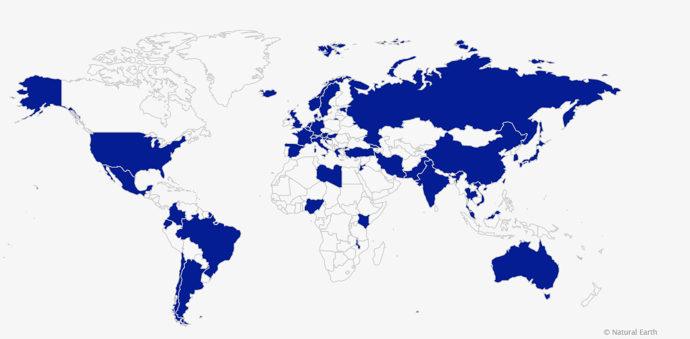

COVID-19: Linking science and policy using serological studies
Author: Stephan Kuster, Head of Institutional Affairs Corona Immunitas , is a research program tracking and investigating the spread and impact of the coronavirus pandemic using seroepidemiological studies.The project is a brilliant example of using scientific data from the SARS-CoV-2 pandemic to help inform and hopefully improve the policymaking decision process, thereby strengthening the link between science and policy.
Corona Immunitas is coordinated by the Swiss School of Public Health (SSPH+), the publisher of the International Journal of Public Health.
The expectation is that by offering reliable data to policymakers, progress will be made in understanding how seroepidemiological studies can be used to inform a response strategy for other urgent global health matters, including future pandemics.Not only will projects such as
Corona Immunitas improve our understanding of the current virus outbreak in a specific country – such as Switzerland – but it will also enable policymakers around to world to think about how we might use serological data to be better prepared in the future.
Frontiers is a supporting partner of the
Corona Immunitas project because we believe in its important mission.As a part of our support to this Swiss study, we are also showcasing a growing collection of seroepidemiological studies around the world on our Policy Labs platform.These were conducted worldwide predominantly in the first half of 2020.
aperture':'0','credit':'','camera':'','caption':'','created_timestamp':'0','copyright':'','focal_length':'0','iso':'0','shutter_speed':'0','title':'','orientation':'0'}' data-image-title='MicrosoftTeams-image (6)' data-large-file='https://frontiersinblog.files.wordpress.com/2021/02/microsoftteams-image-6.png?w=940' data-medium-file='https://frontiersinblog.files.wordpress.com/2021/02/microsoftteams-image-6.png?w=300' data-orig-file='https://frontiersinblog.files.wordpress.com/2021/02/microsoftteams-image-6.png' data-orig-size='1306,643' data-permalink='https://blog.frontiersin.org/2021/02/08/covid-19-linking-science-and-policy-using-serological-studies/microsoftteams-image-6/' sizes='(max-width: 620px) 100vw, 620px' src='https://frontiersinblog.files.wordpress.com/2021/02/microsoftteams-image-6.png?w=1240' srcset='https://frontiersinblog.files.wordpress.com/2021/02/microsoftteams-image-6.png?w=620 620w, https://frontiersinblog.files.wordpress.com/2021/02/microsoftteams-image-6.png?w=1240 1240w, https://frontiersinblog.files.wordpress.com/2021/02/microsoftteams-image-6.png?w=150 150w, https://frontiersinblog.files.wordpress.com/2021/02/microsoftteams-image-6.png?w=300 300w, https://frontiersinblog.files.wordpress.com/2021/02/microsoftteams-image-6.png?w=768 768w, https://frontiersinblog.files.wordpress.com/2021/02/microsoftteams-image-6.png?w=1024 1024w'>
Posted On: 2021-02-08T00:00:00

Content Date: 2021-02-08
Download Date: 2021-07-10
Document ID: L0C04F2EV